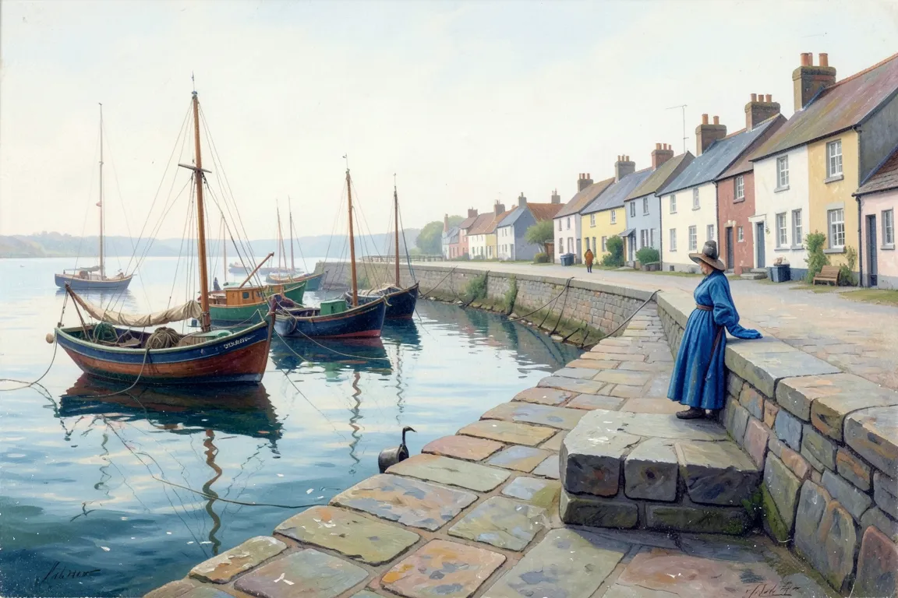

painting · 1400–1520 · also: Quattrocento, Early and High Renaissance, Italian Renaissance painting
A picture as a measured window onto the world: linear perspective, modelled figures, a stable geometry and a calm, idealised body. Florentine and Venetian workshops and Flemish oil painters set the rules.

Core thesis
A picture is a window onto a measured space, and the ideal human body is the measure of that space.
Design principles
Set one vanishing point on the horizon line, at 40–50% of the picture height, and make every orthogonal converge on it.
Arrange the main figures in a triangle or pyramid, with the apex on the centre axis in the upper third.
Model each form with a smooth gradation from light to shade in 6–8 steps, with no drawn outline on the flesh.
Build colour in thin glazes over a drawn underlayer, and level the surface until no stroke is visible.
Put a calm landscape or a piece of architecture behind the figures, and make it cooler, paler and bluer with each step of distance.
Place the horizon, the focal figure and the architecture on the golden section or on a 2:3 ratio.
Pose figures in contrapposto with the head turned 10–30° from the shoulders, and give the hands a meaning.
Anti-patterns
Visible brush strokes on figures or faces
Flat colour fields without modelling
Diagonal compositions with a single hard beam of light
Elongated limbs, twisted poses or a stretched neck
Figures cropped by the picture edge
Fully saturated colour over more than a robe or two